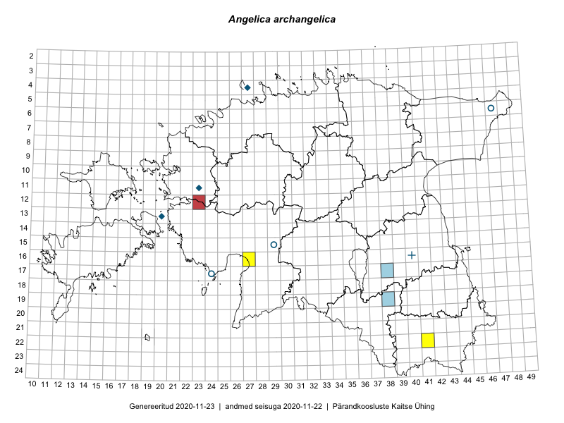

Angelica archangelica
Uuendatud: 2016-12-08
Kaardile koondatud taksonid: Angelica archangelica L.; Angelica archangelica subsp. litoralis (Fr.) Thell.

Kaart põhineb 104 kirjel, neist vaatlusi 100 ja eksemplare 4. Taksonit on leitud 59 ruudust.
| Ruut | Vaatleja(d) | Vaatlusaeg | Kirje tüüp | Viide andmebaasikirjele |
|---|---|---|---|---|
| 16-25 | Peedu Saar, Liina Oja | 2015-05-21 | ruut/ala | vaata PlutoFis |
| 12-20 | Ott Luuk | 2014-07-24 | ruut/ala | vaata PlutoFis |
| 12-22 | Ott Luuk, Jaak-Albert Metsoja | 2015-05-27 | ruut/ala | vaata PlutoFis |
| 11-24 | Ott Luuk, Toomas Kukk, Thea Kull, Peedu Saar, Timo Luhamäe | 2015-06-25 | ruut/ala | vaata PlutoFis |
| 05-49 | Tiit Hallikma, Toomas Kukk | 2015-07-22 | ruut/ala | vaata PlutoFis |
| 12-21 | Tiit Hallikma, Toomas Kukk | 2015-08-27 | ruut/ala | vaata PlutoFis |
| 12-24 | Tiit Hallikma, Toomas Kukk | 2015-08-24 | ruut/ala | vaata PlutoFis |
| 06-49 | Ott Luuk, Hannes Pehlak | 2015-07-21 | ruut/ala | vaata PlutoFis |
| 13-16 | Meeli Mesipuu | 2015-07-09 | ruut/ala | vaata PlutoFis |
| 21-26 | Ott Luuk, Eerik Leibak, Liisa Rennel | 2015-05-20 | ruut/ala | vaata PlutoFis |
| 17-25 | Ott Luuk, Eerik Leibak | 2015-05-21 | ruut/ala | vaata PlutoFis |
| 17-24 | Ott Luuk, Eerik Leibak | 2015-05-21 | ruut/ala | vaata PlutoFis |
| 05-48 | Meeli Mesipuu, Timo Luhamäe | 2015-07-23 | ruut/ala | vaata PlutoFis |
| 16-26 | Meeli Mesipuu | 2015-07-18 | ruut/ala | vaata PlutoFis |
| 19-13 | Oliver Parrest | 2015-07-01 | ruut/ala | vaata PlutoFis |
| 17-24 | Maret Gerz, Leena Gerz | 2015-08-12 | ruut/ala | vaata PlutoFis |
| 16-25 | Maret Gerz, Leena Gerz | 2015-08-09 | ruut/ala | vaata PlutoFis |
| 13-21 | Rein Kalamees, Kersti Püssa | 2015-06-28 | ruut/ala | vaata PlutoFis |
| 20-11 | Mari Reitalu, Triin Reitalu | 2014-08-15 | ruut/ala | vaata PlutoFis |
| 13-24 | Rein Kalamees, Kersti Püssa | 2015-06-29 | ruut/ala | vaata PlutoFis |
| 14-11 | Mari Reitalu, Oliver Parrest | 2015-07-14 | ruut/ala | vaata PlutoFis |
| 14-13 | Mari Reitalu, Oliver Parrest | 2015-07-21 | ruut/ala | vaata PlutoFis |
| 13-18 | Meeli Mesipuu, Kadri Tali | 2015-06-25 | ruut/ala | vaata PlutoFis |
| 17-25 | Maret Gerz, Leena Gerz | 2015-08-08 | ruut/ala | vaata PlutoFis |
| 16-26 | Indrek Tammekänd | 2015-05-11 | ruut/ala | vaata PlutoFis |
| 14-11 | Mari Reitalu, Triin Reitalu | 2015-05-24 | ruut/ala | vaata PlutoFis |
| 20-12 | Triin Reitalu, Sirje Azarov | 2015-05-30 | ruut/ala | vaata PlutoFis |
| 20-12 | Oliver Parrest | 2015-08-15 | ruut/ala | vaata PlutoFis |
| 16-26 | Meeli Mesipuu | 2015-06-19 | ruut/ala | vaata PlutoFis |
| 16-27 | Meeli Mesipuu | 2015-06-17 | ruut/ala | vaata PlutoFis |
| 07-33 | Meeli Mesipuu | 2015-06-29 | ruut/ala | vaata PlutoFis |
| 12-22 | Thea Kull, Eerik Leibak | 2015-08-27 | ruut/ala | vaata PlutoFis |
| 11-24 | Aat Sarv | 2015-06-24 | ruut/ala | vaata PlutoFis |
| 11-25 | Aat Sarv | 2015-07-30 | ruut/ala | vaata PlutoFis |
| 18-14 | Mari Reitalu, Triin Reitalu | 2014-07-17 | ruut/ala | vaata PlutoFis |
| 18-15 | Mari Reitalu | 2014-07-17 | ruut/ala | vaata PlutoFis |
| 05-25 | Mari Metsoja, Jaak-Albert Metsoja | 2015-05-30 | ruut/ala | vaata PlutoFis |
| 06-23 | Mari Metsoja, Jaak-Albert Metsoja, Ott Luuk | 2015-06-04 | ruut/ala | vaata PlutoFis |
| 04-39 | Kaili Orav, Silvia Pihu | 2015-06-19 | ruut/ala | vaata PlutoFis |
| 20-11 | Mari Reitalu, Triin Reitalu | 2015-07-19 | ruut/ala | vaata PlutoFis |
| 03-29 | Ott Luuk, Mari Reitalu, Tõnu Ploompuu | 2014-06-01 | ruut/ala | vaata PlutoFis |
| 09-18 | Ott Luuk, Toomas Kukk, Thea Kull, Peedu Saar | 2014-05-25 | ruut/ala | vaata PlutoFis |
| 11-25 | Hanna-Eliisa Luts, Tõnu Ploompuu | 2015-07-28 | ruut/ala | vaata PlutoFis |
| 10-24 | Hanna-Eliisa Luts, Tõnu Ploompuu, Anna-Grete Rebane | 2015-07-19 | ruut/ala | vaata PlutoFis |
| 20-26 | Indrek Tammekänd | 2016-05-10 | ruut/ala | vaata PlutoFis |
| 11-23 | Hanna-Eliisa Luts, Marian Hiie, Tõnu Ploompuu | 2015-08-04 | ruut/ala | vaata PlutoFis |
| 21-26 | Indrek Tammekänd | 2016-05-10 | ruut/ala | vaata PlutoFis |
| 11-25 | Ott Luuk, Tiit Hallikma | 2016-05-12 | ruut/ala | vaata PlutoFis |
| 10-24 | Ott Luuk, Tiit Hallikma | 2016-05-12 | ruut/ala | vaata PlutoFis |
| 12-20 | Ott Luuk, Tiit Hallikma | 2016-05-13 | ruut/ala | vaata PlutoFis |
| 12-22 | Ott Luuk, Tiit Hallikma | 2016-05-14 | ruut/ala | vaata PlutoFis |
| 12-24 | Ott Luuk, Tiit Hallikma | 2016-05-14 | ruut/ala | vaata PlutoFis |
| 11-23 | Ott Luuk, Tiit Hallikma | 2016-05-14 | ruut/ala | vaata PlutoFis |
| 17-26 | Toomas Kukk, Tiit Hallikma | 2016-06-04 | ruut/ala | vaata PlutoFis |
| 20-26 | Peedu Saar, Thea Kull | 2016-06-06 | ruut/ala | vaata PlutoFis |
| 19-26 | Peedu Saar, Thea Kull | 2016-06-07 | ruut/ala | vaata PlutoFis |
| 20-26 | Thea Kull, Peedu Saar | 2016-06-06 | punkt | vaata PlutoFis |
| 10-20 | Tõnu Ploompuu | 2015-05-02 | ruut/ala | vaata PlutoFis |
| 10-21 | Tõnu Ploompuu | 2015-08-21 | ruut/ala | vaata PlutoFis |
| 21-19 | Silvia Pihu | 2015-07-01 | ruut/ala | vaata PlutoFis |
| 22-19 | Silvia Pihu | 2015-07-03 | ruut/ala | vaata PlutoFis |
| 18-26 | Peedu Saar, Ott Luuk | 2016-06-10 | punkt | vaata PlutoFis |
| 06-25 | Toomas Kukk, Sander Laherand | 2016-07-05 | ruut/ala | vaata PlutoFis |
| 14-21 | Mari Reitalu, Oliver Parrest | 2016-07-04 | ruut/ala | vaata PlutoFis |
| 05-25 | Sander Laherand, Toomas Kukk | 2016-07-05 | punkt | vaata PlutoFis |
| 06-25 | Sander Laherand, Toomas Kukk | 2016-07-05 | punkt | vaata PlutoFis |
| 05-49 | Erkki Otsman, Sergei Smirnov | 2016-06-15 | ruut/ala | vaata PlutoFis |
| 14-14 | Peedu Saar, Maret Gerz | 2016-08-12 | ruut/ala | vaata PlutoFis |
| 10-12 | Sander Laherand, Maret Gerz, Nele Jõessar | 2016-08-10 | ruut/ala | vaata PlutoFis |
| 11-23 | Aat Sarv, Maret Gerz | 2016-07-06 | ruut/ala | vaata PlutoFis |
| 13-21 | Aat Sarv, Maret Gerz | 2016-07-05 | ruut/ala | vaata PlutoFis |
| 18-23 | Karin Kaljund, Kaire Lanno, Indrek Melts | 2016-07-27 | ruut/ala | vaata PlutoFis |
| 12-24 | Sirje Azarov, Meeli Mesipuu | 2016-07-05 | ruut/ala | vaata PlutoFis |
| 11-22 | Sirje Azarov, Oliver Parrest | 2016-07-07 | ruut/ala | vaata PlutoFis |
| 20-26 | Sirje Azarov, Indrek Tammekänd | 2016-07-18 | ruut/ala | vaata PlutoFis |
| 21-26 | Sirje Azarov, Indrek Tammekänd | 2016-07-18 | ruut/ala | vaata PlutoFis |
| 21-19 | Meeli Mesipuu, Ott Luuk | 2016-09-10 | ruut/ala | vaata PlutoFis |
| 22-19 | Ott Luuk, Meeli Mesipuu | 2016-09-10 | ruut/ala | vaata PlutoFis |
| 12-21 | Rein Kalamees, Liina Oja | 2016-07-08 | ruut/ala | vaata PlutoFis |
| 12-23 | Mari Reitalu, Oliver Parrest | 2016-07-05 | ruut/ala | vaata PlutoFis |
| 14-18 | Mari Reitalu, Sirje Azarov | 2016-08-09 | ruut/ala | vaata PlutoFis |
| 10-24 | Helle Mäemets, Tiina Elvisto | 2016-07-06 | ruut/ala | vaata PlutoFis |
| 18-24 | Peedu Saar, Ott Luuk | 2016-09-21 | ruut/ala | vaata PlutoFis |
| 11-24 | Helle Mäemets, Tiina Elvisto | 2016-07-06 | ruut/ala | vaata PlutoFis |
| 17-24 | Tiit Hallikma, Tõnu Ploompuu | 2016-07-06 | ruut/ala | vaata PlutoFis |
| 08-20 | Tiit Hallikma, Tõnu Ploompuu | 2016-07-07 | ruut/ala | vaata PlutoFis |
| 10-19 | Ott Luuk, Meeli Mesipuu | 2016-09-15 | ruut/ala | vaata PlutoFis |
| 13-24 | Peedu Saar, Timo Luhamäe, Johannes Kõdar | 2016-07-05 | ruut/ala | vaata PlutoFis |
| 22-41 | Tiit Hallikma, Toomas Kukk, Johannes Kõdar | 2016-06-16 | punkt | vaata PlutoFis |
| 03-29 | Kadi-Liis Kesler | 2015-07-20 | ruut/ala | vaata PlutoFis |
| 03-30 | Kadi-Liis Kesler | 2015-07-20 | ruut/ala | vaata PlutoFis |
| 19-26 | Ott Luuk, Hannes Pehlak | 2016-07-18 | ruut/ala | vaata PlutoFis |
| 22-19 | Meeli Mesipuu, Ott Luuk | 2016-09-11 | punkt | vaata PlutoFis |
| 15-22 | Meeli Mesipuu, Sirje Azarov | 2016-07-04 | ruut/ala | vaata PlutoFis |
| 17-26 | Meeli Mesipuu, Timo Luhamäe | 2016-07-18 | ruut/ala | vaata PlutoFis |
| 18-26 | Ott Luuk, Peedu Saar | 2016-06-10 | ruut/ala | vaata PlutoFis |
| 12-23 | Meeli Mesipuu, Maret Gerz | 2015-08-24 | ruut/ala | vaata PlutoFis |
| 04-34 | Hannes Pehlak, Toomas Kukk | 2016-07-26 | ruut/ala | vaata PlutoFis |
| 07-22 | Marju Erit | 2015-05-01 | ruut/ala | vaata PlutoFis |
| 17-27 | Oliver Parrest, Elle Rajandu | 2016-07-19 | ruut/ala | vaata PlutoFis |
| 11-24 | Ott Luuk | 2012-06-13 | eksemplar | vaata PlutoFis |
| 11-24 | Ott Luuk | 2012-06-13 | eksemplar | vaata PlutoFis |
| 11-24 | Ott Luuk | 2012-06-13 | eksemplar | vaata PlutoFis |
| 11-24 | Ott Luuk | 2012-06-13 | eksemplar | vaata PlutoFis |